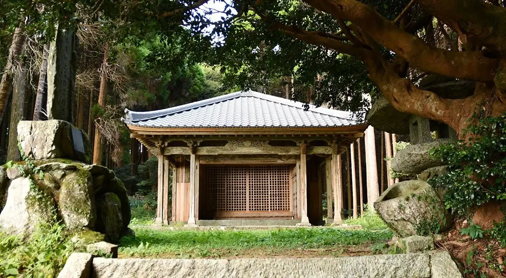
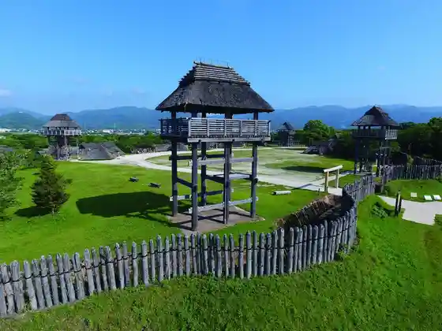
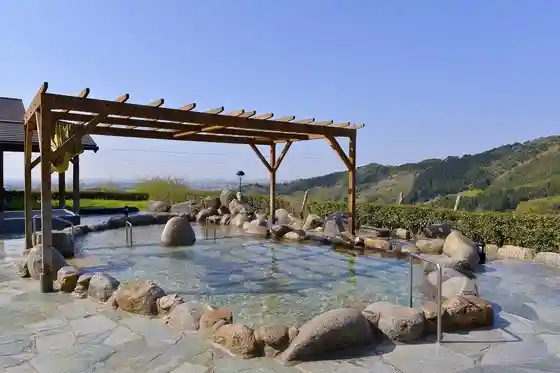
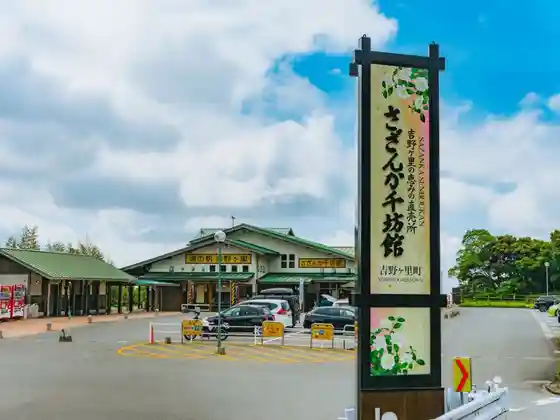

Japan / Saga / Yoshinogari
Yoshinogari
Yoshinogari · Saga
Yoshinogari
Highlighted on the Saga map.

Sights
Yoshinogari Rekishi Park
Yoshinogari, Saga · 0952-55-9333 · Official / source link

Higashisefuri Onsen Sazanka Baths
Yoshinogari, Saga · 0952-53-2619 · Official / source link

Roadside Station Yoshinogari (Sazanka Sembo Kan)
Yoshinogari, Saga · 0952-55-6175 · Official / source link

Yoshino Mugi Kome
Yoshinogari, Saga · 0952-37-8983 · Official / source link
Adobenchabare SAGA
Yoshinogari, Saga · 090-2722-2753 · Official / source link
e- Biikuru Park
Yoshinogari, Saga · 080-5263-9270 · Official / source link
Sengoku Yama no Sazanka (Sazanka Jisei Hokugen Chi)
Yoshinogari, Saga · 0952-37-0350 · Official / source link
Ryozen Jiseki (Nihoncha Jusai Bai Hassho no Chi)
Yoshinogari, Saga · 0952-37-0350 · Official / source link
Ogawa Nai no Sugi
Yoshinogari, Saga · 0952-37-0350 · Official / source link
Yoshinogari Town Hall
Yoshinogari, Saga · 0952-53-1111 · Official / source link